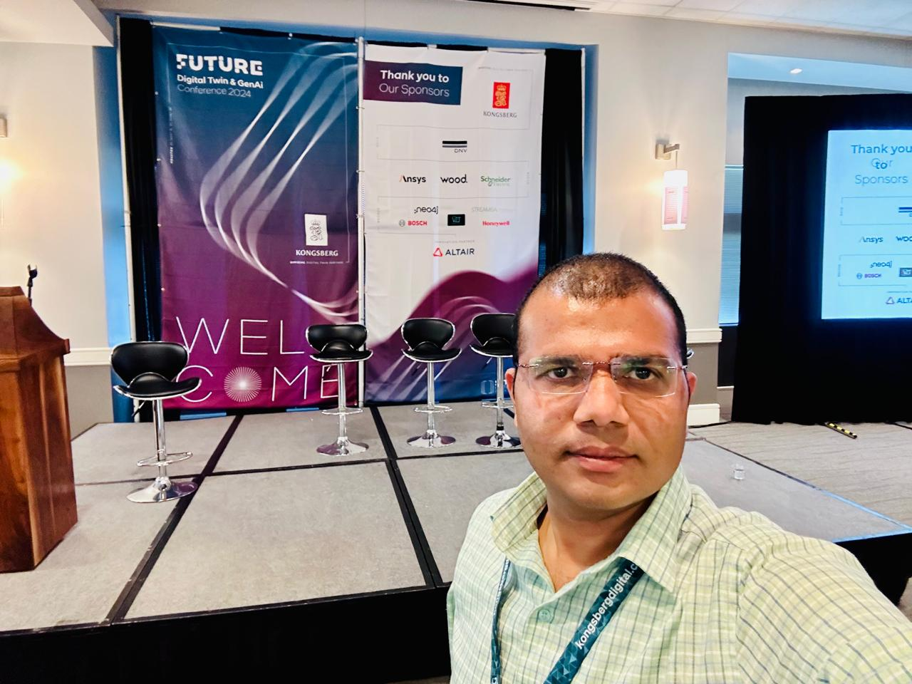

Years
Oil & Gas Digital Transformation
Business Units
Digital Transformation
Systems
Integrated Ecosystem
Users
Supported
Documents
Uploaded & Governed
Data Contracts
Processed Daily
Enterprise programs delivered for & built on
The Problem I Solve
From disconnected information
to a connected digital asset.
Oil & Gas organizations hold engineering data, operational data, maintenance data, documents and 3D models across disconnected platforms. My role is to connect these worlds into one trusted digital ecosystem — the foundation every Digital Twin actually depends on.
Engineering
3D & Documents
Asset Information
IT / OT
Data Platform
Digital Twin
Analytics
Business Value
Photo needed
Professional headshot · front-facing · shoulders-up · plain or blurred background · good lighting
About
17.9+ years connecting engineering, information and digital transformation
Not just a Digital Twin software specialist — the combination of engineering, enterprise architecture, information management and IT/OT convergence that turns a Digital Twin into a trusted enterprise capability, not a dashboard project.
TOGAF® Certified Enterprise Architect · Digital Transformation, Digital Twin, Data Governance and Reporting Strategy programs across Chevron, ADNOC and Reliance Industries.
Capabilities
What I bring to a Digital Transformation
Eight capability areas, each proven at enterprise scale. Click any card for the technologies involved and the business outcome it drives.
Digital Twin Strategy
Roadmaps and business cases for enterprise Digital Twin programs.
Technologies: AVEVA AIM / NET, Kognitwin, Cognite Data Fusion, Azure Digital Twins
Outcome: A Digital Twin program that scales past the pilot into an enterprise capability.
Enterprise Architecture
TOGAF®-aligned target architecture across engineering, operations and IT/OT.
Technologies: TOGAF®, hybrid cloud, Azure, enterprise integration patterns
Outcome: A coherent enterprise landscape, not a patchwork of point solutions.
Engineering Information Management
3D models, P&IDs, documents and specifications across the asset lifecycle.
Technologies: AVEVA E3D, SmartPlant P&ID / Instrumentation, Bentley, AssetWise / eB, Documentum, Meridian, Coreworx
Outcome: Engineering data you can trust, trace and hand over cleanly.
IT / OT Convergence
Connecting SCADA, DCS and PLCs with enterprise IT systems.
Technologies: SCADA, DCS, PLC, Historians, OPC, OSI PI, IIoT
Outcome: Real-time operational context inside enterprise decisions — not two worlds that never talk.
Industrial Data Architecture
Data contracts and pipelines turning raw industrial data into structured asset context.
Technologies: SQL, ETL, Neo4j / Knowledge Graph, Kafka, InfluxDB, TimescaleDB
Outcome: Data that's queryable and contextualized — not just stored.
Asset Information & Handover
Structuring engineering handover from EPC to operations.
Standards: ISO 15926, ISO 14224, CFIHOS, DEXPI
Outcome: A clean, standards-based start to every asset's digital life.
Data Governance
Ownership, quality controls and lifecycle management for engineering and operational data.
Technologies: Master data management, data lineage, quality frameworks
Outcome: One trusted number, enterprise-wide — not five conflicting versions.
Digital Transformation Leadership
Leading cross-functional teams across engineering, IT and operations.
Scale: Cross-functional teams of ~20, spanning engineering, operations, IT and OT
Outcome: Transformation that survives contact with the organization.
Proficiency
Core technical proficiency
Self-rated, built over 18+ years of daily hands-on use.
Methodology
How I approach transformation
A five-step method that keeps engineering reality, enterprise architecture and business value in the same conversation.
Discover
Understand the asset, the business and the information landscape as they actually are.
Assess
Evaluate digital maturity and asset readiness before proposing a solution.
Architect
Define the target architecture and information model — standards first, software second.
Integrate
Connect engineering, operational and enterprise ecosystems into one governed platform.
Realize Value
Prioritize use cases by business value, feasibility and ROI — not by what's technically interesting.
Work
What this looks like in practice
Five factual engagements, at real enterprise scale. Click any case to see the challenge, approach and outcome.
Case 01
Enterprise Digital Twin Deployment
12 business units · 25+ systems · 4,000+ users
Challenge: Engineering and asset information fragmented across 25+ systems, with no single trusted view for 4,000+ users across 12 business units.
Architecture: AVEVA AIM / AVEVA NET as the Digital Twin platform, with an integration layer connecting EDMS, CMMS, ERP and OT sources.
Outcome: A single, governed asset information environment adopted enterprise-wide across all 12 business units.
Case 02
Engineering Information Migration
20+ projects · 6.2M documents · 4.2M technical records
Challenge: Legacy engineering information across 20+ capital projects, inconsistent, duplicated and hard to trust.
Approach: Legacy Information → Data Quality → Migration → Structured Asset Information → Digital Twin.
Outcome: 6.2M engineering documents and 4.2M technical records processed and uploaded into a single trusted source, supporting 12 Chevron business units.
Case 03
Knowledge Graph for Asset Context
Engineering drawings · equipment · tags · relationships
Challenge: Flat data stores that held equipment and tag data but no relationships between them — every question required manual reconstruction.
Approach: A Neo4j-based knowledge graph modeling engineering drawings, equipment, tags and their relationships as a living structure.
Outcome: Asset context that's queryable directly — which equipment belongs to which system, which system feeds which unit.
Case 04
Automated Data Contracts
300+ automated data contracts processed daily
Challenge: Manual data validation couldn't keep pace with the volume of engineering data contracts flowing between systems.
Approach: Automated ETL pipelines validating, transforming and loading engineering data contracts on a daily cycle.
Outcome: 300+ data contracts processed automatically every day, with consistent data quality at that volume.
Case 05
IT / OT Integration
SCADA · DCS · PLC · Historian · CMMS · APM · Digital Twin
Challenge: Operational systems (SCADA, DCS, PLC, Historian) and enterprise systems (CMMS, APM, Engineering) operating as two disconnected worlds.
Architecture: An enterprise architecture connecting OT and IT sources through a common integration and data layer into the Digital Twin.
Outcome: Real-time operational data available inside enterprise decision-making, not siloed in the control room.
On the Ground
Not just a resume — a career spent on the plant floor and in the boardroom



Photo needed
You leading a workshop, stakeholder meeting or site visit
The Transformation
What changes when the information foundation is right
Before
- Siloed systems
- Disconnected documents
- Duplicate data
- Limited asset context
- Manual processes
- Poor data lineage
After
- Connected information
- Asset-centric context
- Integrated IT/OT
- Trusted, governed data
- Digital Twin
- Decision intelligence
Technology Ecosystem
The full ecosystem around the digital asset
The technologies I work with inside each domain.
Engineering
Operations (OT)
Enterprise
Data
Cloud
Analytics
Governance
Journey
17.9+ years, four roles, one throughline
From refinery maintenance to enterprise Digital Twin strategy — a steady climb toward owning the single source of truth for entire organizations.
Mechanical Engineer
Information Management Specialist
Digital Transformation Lead
Digital Twin Senior Consultant
Education
Academic Background
- Master of Science (M.S.), Data Analytics Western Governors University, USA · 2019
- Master of Business Administration (MBA), Operations Management Indira Gandhi National Open University (IGNOU), India · 2014
- Bachelor of Engineering (B.E.), Mechanical Engineering Bhavnagar University, India · 2008
Certifications
Professional Certifications
- TOGAF® Enterprise Architecture Foundation2024
- Digital TwinsUniversity of Michigan · 2023
- Data Analyst in Power BI2023
- Industrial Data FundamentalsCognite · 2022
- Cognite Data Fusion (CDF) Fundamentals2022
- Data Scientist Professional CertificateDataCamp · 2021
- SAS Certified Specialist: Base Programming Using SAS 9.42019
- SAS Certified Statistical Business Analyst Using SAS 92019
Recognition
Achievements & Awards
CFIHOS Committee
Nominated to the Secretary Team of the international CFIHOS standards body (2017–18).
Employee & Team Awards
Exemplary Performance, Silver & Team Academy Awards — L&T Technology Services.
Client Recognition
Certificate of Appreciation from Chevron, NMA Business Unit (2013).
Long Service
5 & 10-year Long Service Awards, L&T Technology Services.
Early Career Recognition
Best Suggestion Award, Reliance Industries Limited (2011).
Scale of Impact
12 business units · 4,000+ users · 25+ systems · millions of records.
What People Say
Testimonials & Recommendations
Real feedback from managers, clients and colleagues carries more weight than anything I can write myself — this section is reserved for it.
Quote needed: manager or client on the impact of a specific engagement
Pull 2–3 LinkedIn recommendations, or ask a former manager at Chevron / ADNOC / EY — send name, title, company and a short quote.
Quote needed: on leadership, delivery quality or stakeholder trust
Same as above — name, title, company and a short direct quote.
Quote needed: from an EPC contractor or cross-functional partner
Same as above — name, title, company and a short direct quote.
Perspectives
Perspectives on industrial digital transformation
Writing in development. Topics I'll be publishing on:
Why Digital Twin Programs Fail Without Information Foundations
Digital Twin vs Digital Model: What Actually Creates Business Value?
Why IT/OT Convergence Is More Than Connecting Systems
Engineering Information as the Foundation of the Digital Asset
From Data Lake to Asset Context: The Role of Knowledge Graphs
Contact
Let's build the digital asset.
Open to conversations around Digital Twin strategy, enterprise transformation, industrial data, engineering information and digital architecture. Based in India, with active engagements across the USA and UAE.